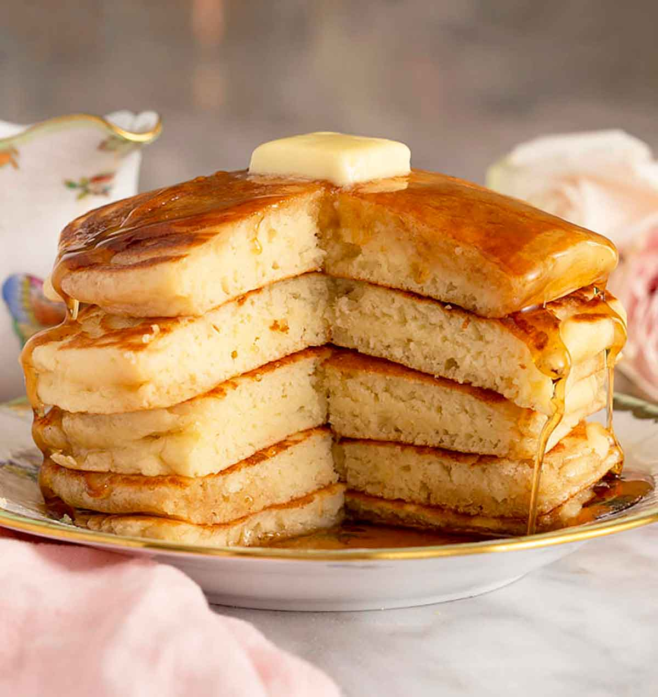

Odin Recipes

Homemade Pancakes
The recipe consist of dry and wet ingredients resulting in a delicious treat. Perfect for something sweet or savory. You can have it for breakfast or even dessert!
This recipe can be made on a regular non-stick pan or a skillet. Which ever your prefer.
Ingredients
- 1⅓ cups all-purpose flour (160g)
- 1 tablespoon baking powder
- 2 tablespoons granulated sugar
- 1 teaspoon salt
- 1 cup milk (240ml)
- 1 large egg
- 4 tablespoons butter melted (56g)
- 2 teaspoons vanilla extract
Steps
- Whisk the flour, sugar, baking powder, and salt in a large bowl.
- In a medium bowl whisk together the milk, egg, melted butter and vanilla together until well combined.
- Pour the milk mixture into the flour and fold together just until combined. (It's okay if there are a few small lumps in the batter. This actually helps make fluffier pancakes!)
- Heat a large skillet or griddle over medium-high heat. Once hot, rub or brush with butter to lightly grease the pan. Working in batches, add ¼ cup of batter for each pancake.
- Cook for a few minutes until golden on the bottom and bubbles start to appear on the top, then flip over and cook an additional minute or until golden brown. Add more butter with each new batch of pancakes. Serve hot with butter and a drizzle of maple syrup.
Preppy Kitchen's Pancakes